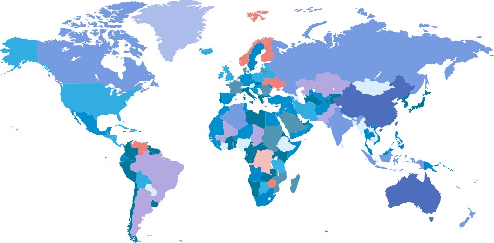
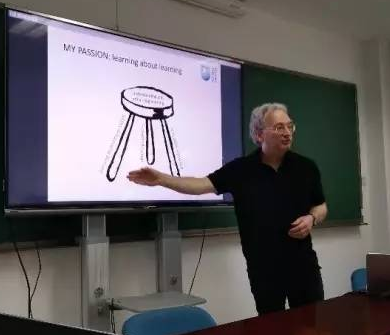

研究领域
Please select
- Open Educational Resources
- Computer Science
- ICT

Mark Brown
Professor Mark Brown is Director of the National Institute for Digital Learning (NIDL).
Elena Barberą Gregori
Currently she is Director of the Doctoral Program in Education and ICT at the Open University of Catalonia in Barcelona (Spain).

Wayne Holmes
In the Graduate School of Education, Wayne teaches the ‘Teaching and Learning with ICT’ and ‘Research Methods & ICT’ modules on the MSc ‘Education, Technology and Society’.
Daniel Burgos
Universidad International de La Rioja (UNIR) Daniel Burgos is Vice-chancellor for Research & Technology, UNESCO Chair on eLearning, and ICDE Chair in Open Educational Resources
Cindy Ives
She have worked in higher education for many years in a variety of contexts and locations.
Beate Grawemeyer
As a current PhD candidate in Computer Science at MIT, he works to make advanced education more accessible.
Beate Grawemeyer
She is a postdoctoral researcher in the Department of Computer Science and Information Systems at Birkbeck, University of London.
您可能感兴趣的专家
-
关注Amy Kamarainen Co-director Amy Kamarainen is co-director of the EcoMobile project at the Harvard Graduate School of Education.人气65 粉丝23
-
已关注人气108 粉丝78
-
已关注Andrew Han Doctor He has been with the university since August 2008 as a Learning Designer for CLDD.人气38 粉丝16
-
关注
 人气98 粉丝52
人气98 粉丝52 -
已关注Eamon Costello Doctor Dr Costello holds a BA (Hons) in English Literature (I) and History (II.I) from Trinity College Dublin, a higher Diploma (Distinction) in Computer Science from University College Dublin, an MSc (I) in Software and Information Systems from National University of Ireland Galway and a Doctorate from Trinity College Dublin.人气89 粉丝45
-
关注人气92 粉丝68
-
关注人气68 粉丝32
-
关注人气46 粉丝13
-
关注人气68 粉丝21
-
关注Curtis G. Northcutt As a current PhD candidate in Computer Science at MIT, he works to make advanced education more accessible人气82 粉丝25
-
关注Elena Barberą Gregori Professor is Director of the Doctoral Program in Education and ICT at the Open University of Catalonia in Barcelona (Spain).人气99 粉丝63
-
关注Amy Kamarainen Co-director Amy Kamarainen is co-director of the EcoMobile project at the Harvard Graduate School of Education.人气84 粉丝28
点击加载更多...